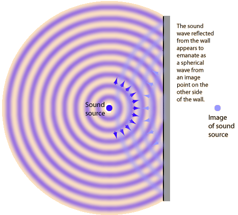

Point source of sound reflecting from a plane surface
When sound waves from a point source strike a plane wall, they produce reflected spherical wavefronts as if there were an "image" of the sound source at the same distance on the other side of the wall.

If something obstructs the direct sound from the source from reaching your ear, then it may sound as if the entire sound is coming from the position of the "image" behind the wall. This kind of sound imaging follows the same law of reflection as your image in a plane mirror.
|